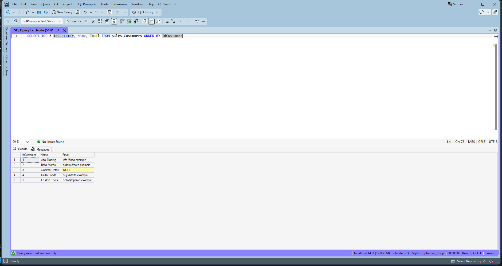
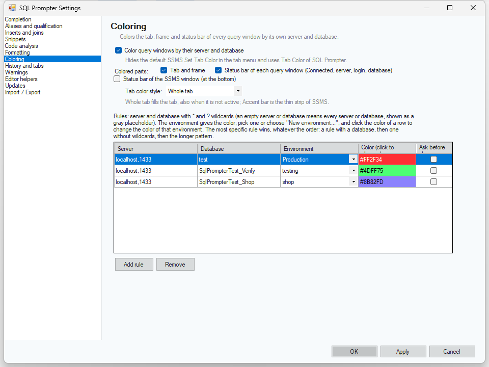

Coloring and confirmations
Make it obvious which server and database a query window is connected to, and ask before a script changes data or leaves a transaction open.
Coloring by server and database

SqlPrompterTest_Shop: the tab, the frame and the status bar of the window have the color of the matching environment.A rule maps a server and a database to an environment; an environment is a name and a color. Every query window is colored by the connection of its own window (not only the one in front) and the colors follow the connection when it changes (for example after USE).

| Option | Effect |
|---|---|
| Color query windows by their server and database | Master switch. It hides the default Set Tab Color of SSMS in the tab menu and uses Tab Color of SQL Prompter. |
| Tab and frame | Colors the tab and the frame of the window. |
| Status bar of each query window | Colors the strip with Connected, the server, the login and the database (the text turns white on a dark color). |
| Status bar of the SSMS window | Colors the bar at the bottom of the main window. |
| Tab color style | Whole tab fills the tab, also when it is not active; Accent bar uses the thin strip of SSMS. |
Rules
Each row of the table is a rule: Server, Database, Environment, the color of the environment (click it to change it) and Ask before changes. Server and database accept the wildcards * and ?; an empty server or database means every server or database. Choose New environment... in the environment column to create one (a name and a color). The most specific rule wins whatever the order: a rule with a database, then one without wildcards, then the longer pattern. Rows that conflict or are incomplete are reported under the table.
A window without a connection is not colored.
Tab Color menu
The context menu of a document tab has Tab Color with the environments (a check mark on the one that applies to the window) and Edit Environments..., which opens the settings on the Coloring page. Choosing an environment changes the rule of that exact server and database (or adds it), so the tab, the status bar and the frame change at once.
Confirmations
Before a script runs, SQL Prompter can ask Run it anyway? (default No). The checks are on the Warnings page of the settings:
| Check | Asks when |
|---|---|
| Warn about DELETE without WHERE | A DELETE has no WHERE, no TOP and does not clear a temporary table or table variable. |
| Warn about UPDATE without WHERE | The same for UPDATE. |
| Warn about an open transaction | A BEGIN TRAN has no COMMIT or ROLLBACK in the same batch (batches that store a procedure, function or trigger are skipped). |
| Ask before changes (per coloring rule) | The window matches a rule with that box checked and the script contains UPDATE, DELETE, TRUNCATE, DROP, ALTER, CREATE OR ALTER, MERGE or EXEC sp_rename (temporary tables and table variables are left out). It belongs to the rule, not the environment, so one database of a server can be protected. |
The checks run when you execute the script or a selection (Execute, F5).